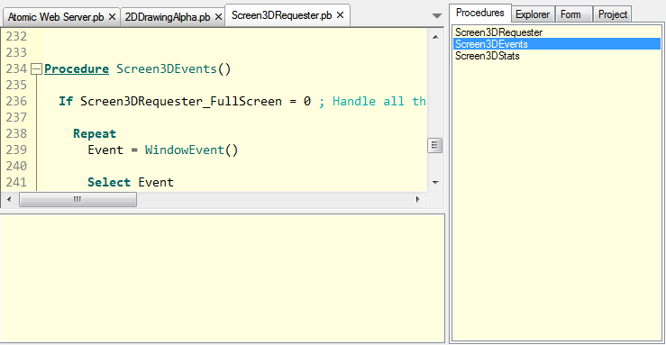

入门指南
PureBasic IDE 允许你创建和编辑您的 PureBasic 源代码，以及允许他们，调试他们并且创建最终的可执行文件。It has both an interface to the PureBasic Compiler, as well to the PureBasic Debugger.其他的在主菜单和工具栏。工具栏只是提供菜单功能的快捷方式。它可以完全自定义。若要找出每个按钮的功能，将鼠标移动到它和等待，直到小工具提示出现。它显示相应的菜单命令。菜单命令在其他章节中解释。
代码编辑区域 (在工具栏下面)
这里显示了所有的源代码。您可以与位于正上方的选项卡之间进行切换。
工具面板 （默认情况下在右侧）
在这里，你有几个工具可以使编码更容易并且提高生产效率。此处显示的工具可以被配置，并且它甚至可以完全移除。查看自定义IDE了解更多信息。
错误日志 （位于编辑区域的下方）
在此区域显示编译器错误和调试消息的日志。It can be hidden/shown for each source code separately.